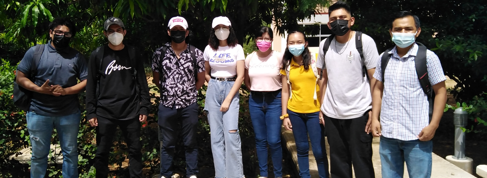
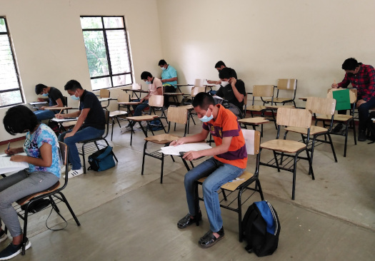
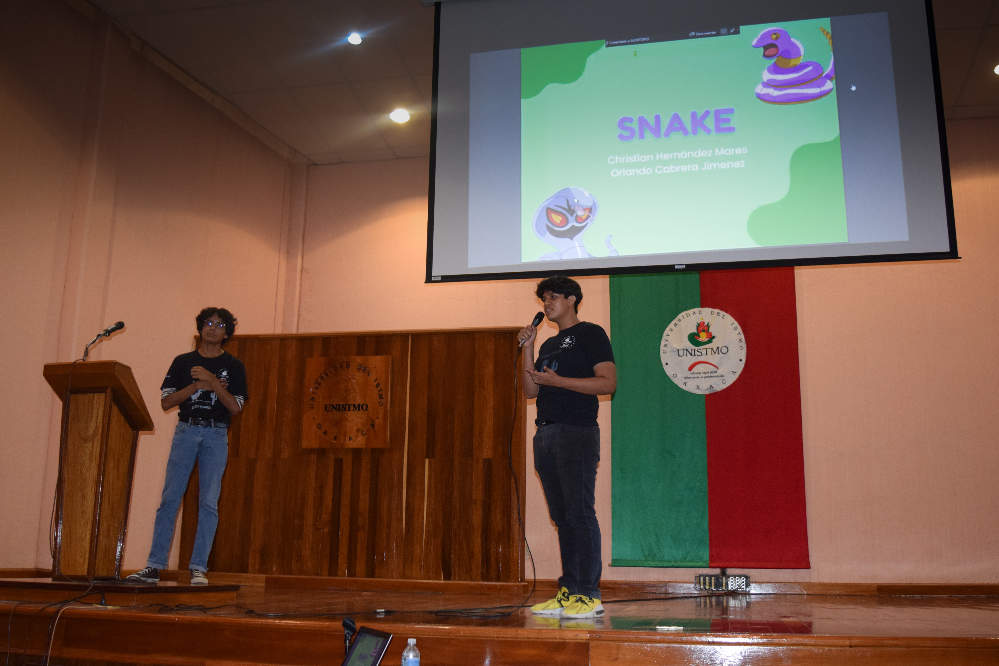
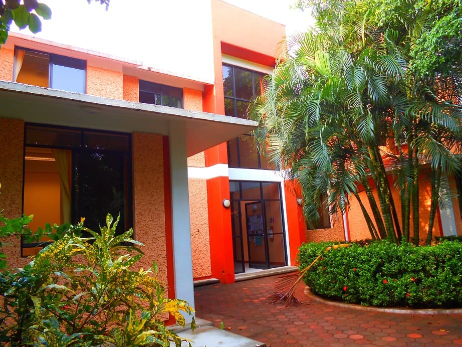
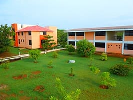
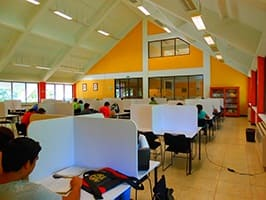

La carrera de Ingeniería en Computación fue creada en el año 2002 en el campus Ixtepec, posteriormente, en el año 2006 fue trasladada al campus Tehuantepec en donde se encuentran las carreras orientadas a la ciencia y la tecnología. A sus más de dieciocho años del inicio de sus actividades académicas, se ha visto el pasar de dieciséis generaciones de egresados que han dado testimonio del compromiso del programa educativo con la formación de profesionales con conocimientos sólidos para el desarrollo de software, hardware de sistemas de cómputo, con habilidades para el desarrollo tecnológico e investigación de las ciencias computacionales, basado en criterios de calidad, disciplina y ética profesional , lo cual ha permitido contar con egresados laborando en empresas trasnacionales y en destacadas instituciones de educación superior, constatando con ello la formación de recursos humanos de alto nivel. Además, en 2016 y 2021 el organismo CIEES (Comités Interinstitucionales para la Evaluación de la Educación Superior) dictaminó favorablemente a nuestra carrera con el Nivel 1 de calidad de los CIEES , una distinción que pocos programas educativos en el área de computación poseen en el país.
Misión y Visión
Misión
Formar profesionistas con alto nivel teórico y práctico en el área de Ingeniería en Computación, con habilidades para el desarrollo tecnológico e investigación aplicada, en un ambiente académico de excelencia, disciplina y ética profesional.
Visión
Consolidarse como un programa de formación profesional en el área de Ingeniería en Computación, con un alto nivel académico y con reconocimiento estatal, nacional e internacional.
Perfil de Ingreso


Los aspirantes a la carrera de Ingeniería en Computación deben mostrar entre otras las siguientes características:
Poseer conocimientos sólidos en el área de física y matemáticas: vectores, álgebra, geometría, trigonometría, cálculo.
Conocer la operación básica de la computadora, algoritmos y ofimática.
Habilidades para el análisis y síntesis de problemas prácticos.
Poseer actitud, hábitos y métodos para el estudio.
Expresarse correctamente en forma oral y escrita.
Disposición para el trabajo académico en equipo.
Interés y gusto por la investigación teórica y aplicada en el área de computación.
Perfil de Egreso

Conocimientos
Generar soluciones eficientes de cómputo, aplicando conocimientos sólidos de ciencias e ingenierías para el desarrollo de hardware y software.
Realizar estudios de postgrado en instituciones nacionales o extranjeras, principalmente en las áreas de sistemas de gestión de datos y sistemas inteligentes.
Habilidades y destrezas
Aplicar diferentes paradigmas de programación, en base a los principios de la ingeniería de software.
Dirigir y/o participar en grupos de trabajo multidisciplinarios que proponen soluciones integrales de cómputo en las organizaciones.
Actitudes
Dirigir y/o participar en grupos de trabajo multidisciplinarios que proponen soluciones integrales de cómputo en las organizaciones.
Instalaciones
Para beneficio de los alumnos la Universidad del Istmo cuenta con Salas de Cómputo, Biblioteca, Cafetería, Auditorio, Laboratorio de Cómputo, Laboratorio de Electrónica e Inteligencia Artificial, entre otros edificios necesarios para la formación de los estudiantes.



Estancias Profesionales
La Estancia Profesional complementa la preparación académica recibida en las aulas y le permiten al alumno familiarizarse con los problemas y situaciones reales que se viven en el ámbito laboral.
Las estancias profesionales deberán realizarse en los periodos de Julio-Septiembre después de sexto y octavo semestre. En cada estancia el alumno deberá cumplir 480 horas. Dichas estancias, podrán llevarse a cabo en instituciones públicas o privadas.
Servicio Social
El servicio social es una oportunidad para que el alumno reconozca las posibilidades de aplicación de su carrera en actividades que apoyan la solución de problemas sociales.
Titulación
Una vez concluido el 100% de los créditos del plan, haber realizado las estancias profesionales y el servicio social, y acreditado los niveles de inglés, se debe proceder al proceso de titulación.
La carrera de Ingeniería en Computación cuenta con dos modalidades para la titulación:
Titulación por tesis
Titulación por examen CENEVAL
Preguntas Frecuentes
¿Cuál es la duración de la carrera? La carrera tiene una duración de 10 semestres.
¿Cuál es el costo de inscripción? El costo actual de inscripción se puede verificar desde Finanzas Oaxaca - UNISTMO.
¿Presentan examen de ingreso? Sí, es necesario para ingresar al curso propedéutico.
¿Si no tengo recursos económicos, puedo estudiar la carrera? Sí, la Universidad cuenta con distintos tipos de becas para apoyar a los estudiantes.
¿Qué significa horario de tiempo completo? Las clases están distribuidas en el periodo de 8:00 hrs a 13:00 hrs y de 15:00 hrs a 18:00 hrs.